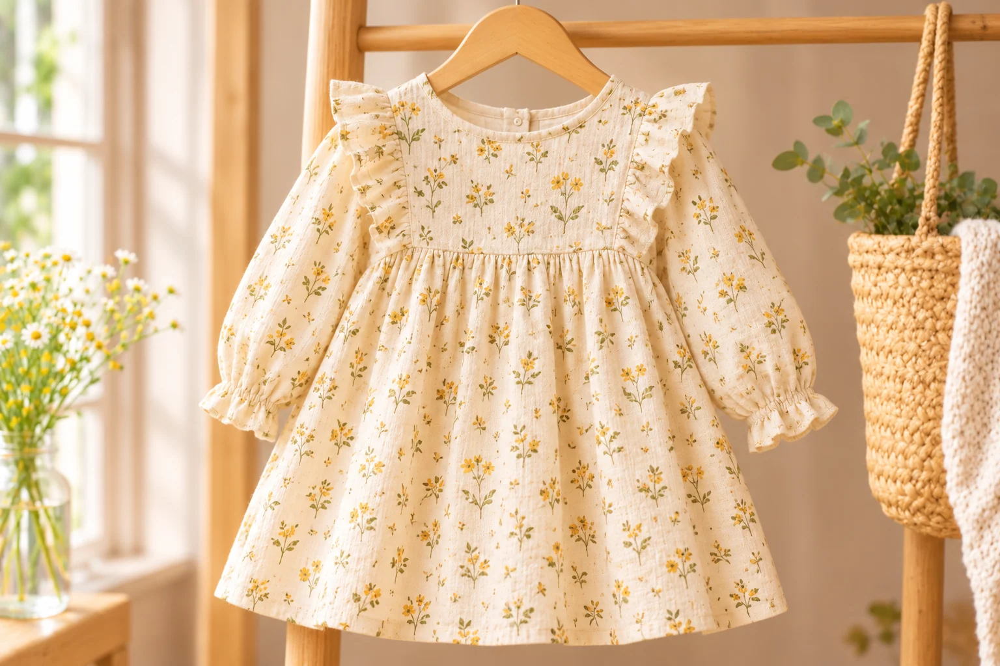

The Meadow Dress
£78
This is a design demonstration. No order will be submitted or stored.
Details & care
Delicate stitching · Long sleeves · Relaxed fit · Gentle machine wash at 30°C.

£78
This is a design demonstration. No order will be submitted or stored.
Delicate stitching · Long sleeves · Relaxed fit · Gentle machine wash at 30°C.